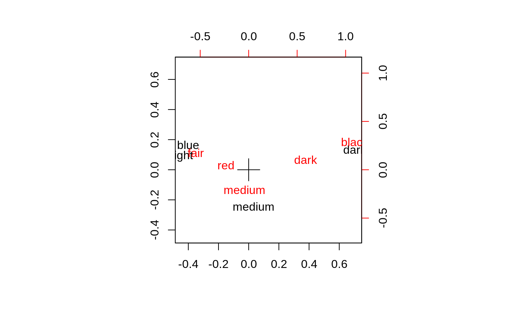

corresp.RdFind the principal canonical correlation and corresponding row- and column-scores from a correspondence analysis of a two-way contingency table.
corresp(x, ...) # S3 method for matrix corresp(x, nf = 1, ...) # S3 method for factor corresp(x, y, ...) # S3 method for data.frame corresp(x, ...) # S3 method for xtabs corresp(x, ...) # S3 method for formula corresp(formula, data, ...)
| x, formula | The function is generic, accepting various forms of the principal
argument for specifying a two-way frequency table. Currently accepted
forms are matrices, data frames (coerced to frequency tables), objects
of class |
|---|---|
| nf | The number of factors to be computed. Note that although 1 is the most usual, one school of thought takes the first two singular vectors for a sort of biplot. |
| y | a second factor for a cross-classification. |
| data | a data frame against which to preferentially resolve variables in the formula. |
| ... | If the principal argument is a formula, a data frame may be specified as well from which variables in the formula are preferentially satisfied. |
An list object of class "correspondence" for which
print, plot and biplot methods are supplied.
The main components are the canonical correlation(s) and the row
and column scores.
See Venables & Ripley (2002). The plot method produces a graphical
representation of the table if nf=1, with the areas of circles
representing the numbers of points. If nf is two or more the
biplot method is called, which plots the second and third columns of
the matrices A = Dr^(-1/2) U L and B = Dc^(-1/2) V L where the
singular value decomposition is U L V. Thus the x-axis is the
canonical correlation times the row and column scores. Although this
is called a biplot, it does not have any useful inner product
relationship between the row and column scores. Think of this as an
equally-scaled plot with two unrelated sets of labels. The origin is
marked on the plot with a cross. (For other versions of this plot see
the book.)
Venables, W. N. and Ripley, B. D. (2002) Modern Applied Statistics with S. Fourth edition. Springer.
Gower, J. C. and Hand, D. J. (1996) Biplots. Chapman & Hall.
(ct <- corresp(~ Age + Eth, data = quine))#> First canonical correlation(s): 0.05317534 #> #> Age scores: #> F0 F1 F2 F3 #> -0.3344445 1.4246090 -1.0320002 -0.4612728 #> #> Eth scores: #> A N #> -1.0563816 0.9466276plot(ct)corresp(caith)#> First canonical correlation(s): 0.4463684 #> #> Row scores: #> blue light medium dark #> -0.89679252 -0.98731818 0.07530627 1.57434710 #> #> Column scores: #> fair red medium dark black #> -1.21871379 -0.52257500 -0.09414671 1.31888486 2.45176017